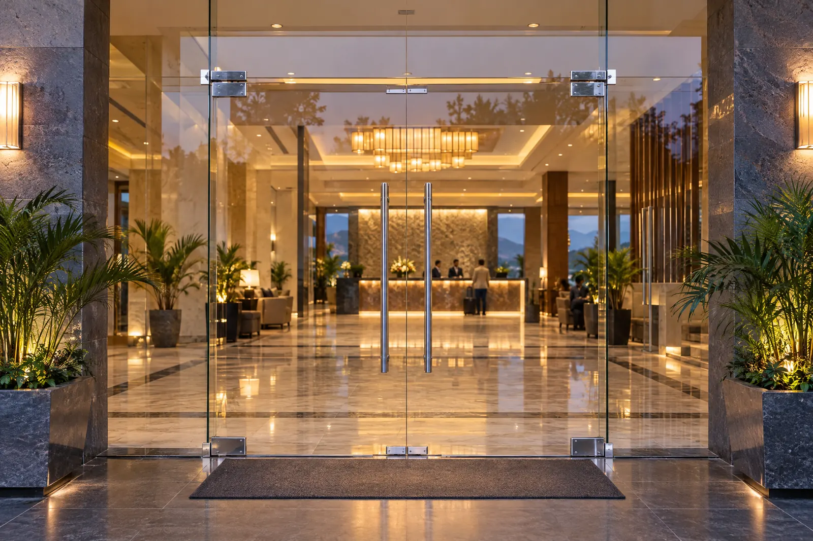
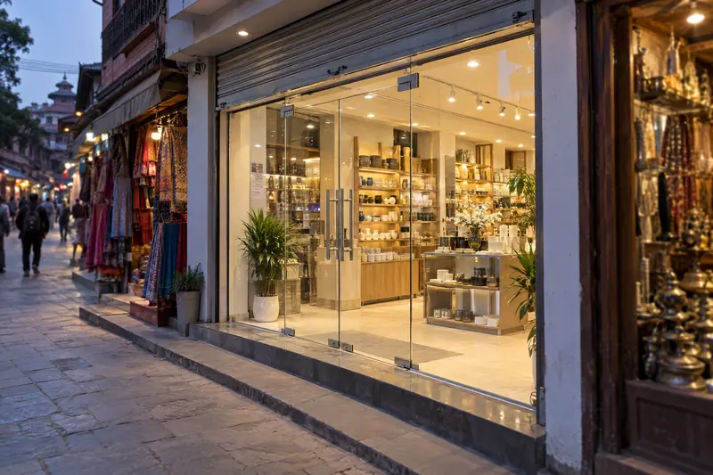
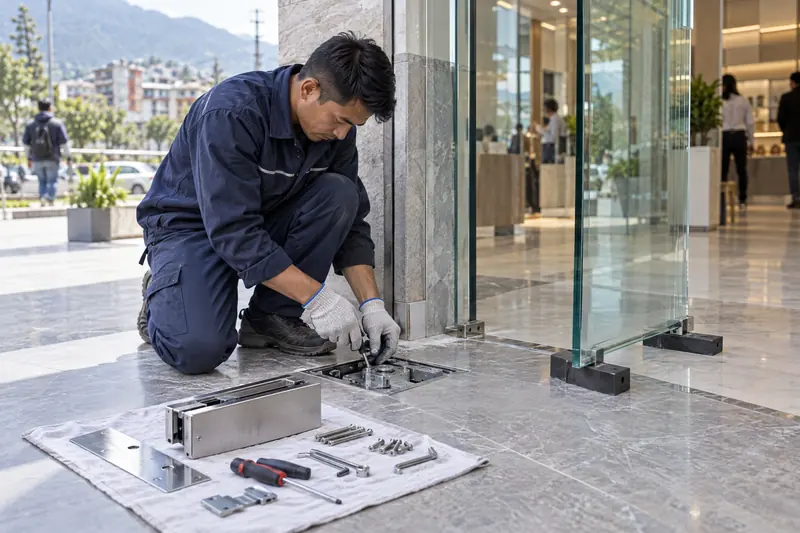

Frameless Glass Doors in Nepal
Single, double and sliding toughened glass doors on SOGI floor springs and SS304 patch fittings. Designed, fabricated and installed by SOGI Projects across Nepal.
Frameless Glass Doors
A frameless glass door is the first thing a customer touches. SOGI Projects installs single, double and sliding toughened glass doors for shops, offices, hotels, restaurants, banks and homes across Nepal.
Because SOGI manufactures its own floor-spring sets, patch fittings and handles, every door uses matched hardware sized for the weight and width of the glass. We recommend SS304 near entrances, where SS202 rusts quickly.
Who it's for
- Shops
- Offices
- Hotels & resorts
- Restaurants & cafés
- Banks
- Hospitals
- Homes
How it's built
- Top patch fitting (pivot point)
- Bottom patch fitting
- Floor spring in a pit below floor level (self-closing, holds open at 90°)
- Lock patch fitting
- D-handle or pull handle
- 12 mm toughened glass leaf
Design options: Glass: clear, frosted, tinted, logo etching · Handles: D-handle, H-handle, square bar, knob · Finish: SS mirror, SS matt, black, gold
Frameless Glass Doors: options & specifications
Typical glass and hardware for each type. We confirm the final spec after the site survey.
| Work type | What it is | Glass | Hardware | Best for |
|---|---|---|---|---|
| Frameless single door | One glass leaf on top and bottom patch fittings with a floor spring and lock patch. | 12 mm toughened | Patch fittings, floor spring, lock, handle | Shops, office entries |
| Frameless double door | Two leaves, each on its own floor spring, locking at the centre. | 12 mm toughened | 2 floor springs, 4 patches, centre lock | Main entrances, hotels, restaurants |
| Sliding glass door | Top-hung leaf rolling on an SS rail or aluminium track with a floor guide. | 10–12 mm toughened | Sliding kit, rollers, floor guide | Homes (kitchen, balcony), offices |
| Entrance door with side & top panels | Door with fixed side lights and an over-panel, joined with L-patch and over-panel patch fittings. | 12 mm toughened | L-patch, over-panel patch, connectors | Showrooms, banks, hotels |
| Bathroom glass door | Frosted or tinted door on SS glass-to-wall hinges with a bathroom lock. | 8–10 mm toughened | Shower hinges, lock, knob | Homes, hotels, hostels |
How we make sure it lasts
- 12 mm glass weighs about 30 kg per m², so we match the floor spring and patch size to the door's weight and width.
- The floor-spring pit is cut into the floor. We confirm the final floor level (tiles, marble) before fixing it.
- Handle centre is set at about 1 m from the floor.
- We use SS304 fittings at entrances. Old SS202 fittings rust fast near doors that face outside.
Five steps, one team
Site survey
Exact measurement at three points on site.
Design
Glass type, thickness, hardware and drawing.
Fabrication
Cutting, holes and polishing, then toughening.
Installation
A trained team fits it with SOGI SS304 fittings.
Support
Service, repair and maintenance after handover.
Frameless Glass Doors: questions
What glass is used for a frameless glass door?
Frameless swing doors use 12 mm toughened glass. Sliding doors use 10–12 mm, and bathroom doors use 8–10 mm toughened glass.
My glass door closes too fast or doesn't close. Can you fix it?
Yes. That is usually a floor-spring problem. We repair or replace floor springs and patch fittings. See our glass repair service.
Do you supply only the hardware for glass doors?
Yes. If you are a fabricator, SOGI supplies floor springs, patch fittings, locks and handles wholesale. Call our hardware team on +977-9705663388.
Which handle styles are available?
D-handles, H-handles, square bar pull handles and knobs, in SS mirror, SS matt, black or gold finish.
You may also need

Shop Front & Showroom Glass
Glass fronts behind shutters, frameless shop fronts and tall showroom glazing.
Learn more
Glass Partitions & Cabins
Frameless and framed partitions, glass cabins and conference rooms that divide space without blocking light.
Learn more
Glass Repair & Replacement
Floor spring and patch repair, broken glass replacement, shower hinge fixes and SS304 upgrades.
Learn moreServing Bharatpur (Chitwan), the Kathmandu Valley, Birgunj and all of Nepal.
Get a quote for frameless glass doors
Send a photo of your site and rough sizes on WhatsApp. We'll plan the survey and send your quotation.